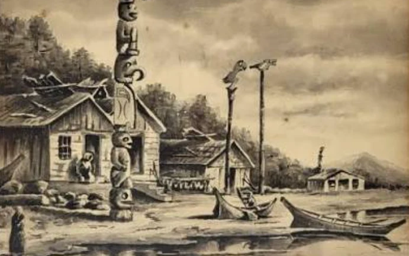
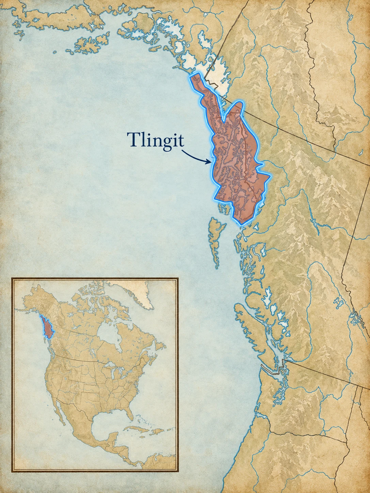
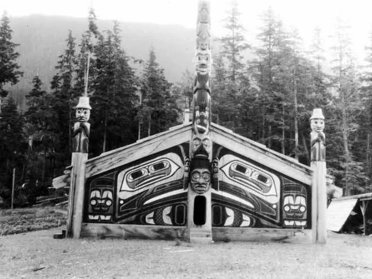
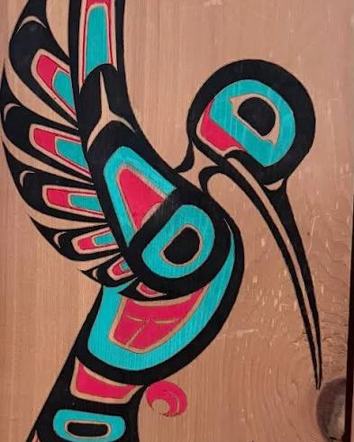
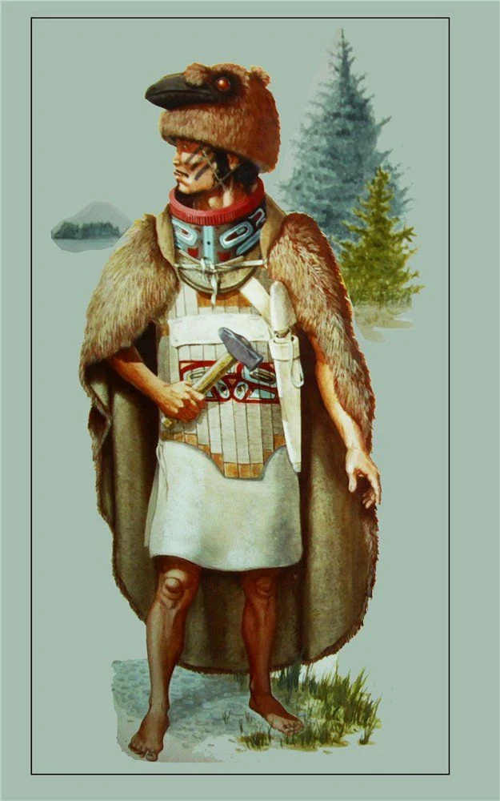
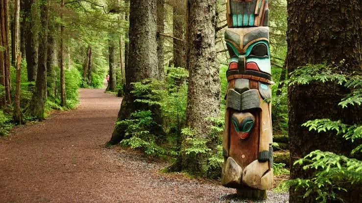
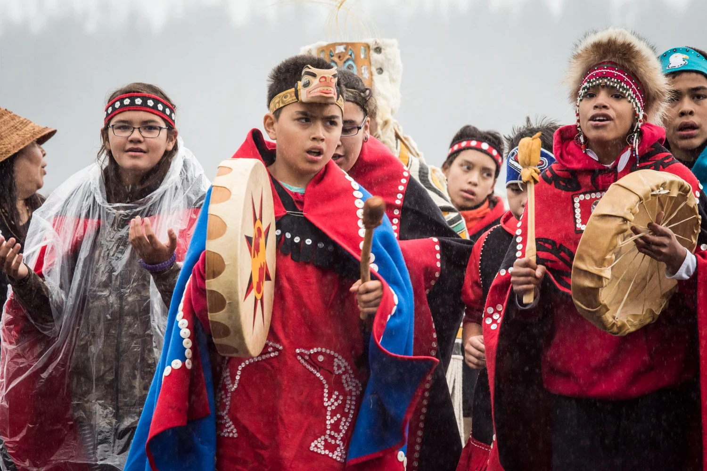

Clan
A clan connects people to ancestors, histories, names, places, and one another.
The Tlingit homeland stretches across the islands, fjords, mountains, and mainland coast of Southeast Alaska and into neighboring parts of Canada. Tlingit communities built powerful maritime economies around fishing, trade, travel, and carefully managed resources. Clan relationships organized identity, property, ceremony, and responsibility.


Tlingit identity is deeply tied to clan. Names, crests, stories, houses, places, and ceremonial property belong within systems of relationship and responsibility—not simply to individuals.
Southeast Alaska is a maze of islands separated by channels, inlets, and fjords. Canoes linked communities that might look isolated on a land map. Salmon, halibut, herring, shellfish, sea mammals, deer, berries, and other resources supported large settlements and regional trade.
Knowledge of tides, currents, seasonal runs, mountain passes, and named places mattered just as much as knowledge of roads does today. The water was not an empty space between villages—it was the main travel network connecting them.
Tlingit clans maintained important fishing places and followed established trade routes along the coast and toward the interior. Dried fish, sea-otter furs, and valuable woven robes could be exchanged for materials such as caribou skins, copper, jade, and other goods that were harder to obtain locally.
That geography helped create communities that were both strongly rooted in particular places and connected to a much wider world. A village might face a narrow channel, but canoes could carry people, news, food, and trade goods far beyond it.

Tlingit society is matrilineal. A child belongs to the mother’s clan. Clans are grouped into two major sides, or moieties: Raven and Eagle. Balance between the two sides shapes marriage, ceremony, witnessing, assistance, and reciprocity.
A clan connects people to ancestors, histories, names, places, and one another.
Animals, beings, or other images may represent clan histories and rights. A crest is not a personal logo anyone may copy.
Tlingit at.óow can include clan-owned names, stories, objects, crests, houses, and places with deep inherited meaning.

Five salmon species return to Southeast Alaska. Tlingit families developed methods to catch, dry, smoke, store, and share fish for use across the year. Halibut, herring, shellfish, berries, deer, and other foods added variety.
Successful fishing depended on detailed knowledge of particular streams, tides, and seasons. Salmon taken during a short run could be preserved for winter, making careful preparation and storage just as important as catching the fish itself.
Cedar and spruce supplied canoes, house timbers, carvings, containers, and fibers. Large cedar canoes made long-distance travel and trade possible, while smaller tools and containers show how completely woodworking knowledge shaped daily life.
Large clan houses were not just shelters. They were social spaces tied to families, ancestors, art, and ceremony. Carved posts, painted screens, and other clan property could make the house itself a visible record of identity and history.
Sealaska Heritage teaches a Kiks.ádi story about a boy who treats a piece of salmon disrespectfully and then goes to live with the Salmon People. Through that experience he learns why salmon must be treated with care and respect.
The point is not simply that salmon are useful. The story teaches a relationship: people depend on salmon, and therefore people have responsibilities toward salmon. Sealaska Heritage specifically notes that this story belongs to the Kiks.ádi clan, so we should name that ownership rather than presenting it as a generic “Native legend.”

Tlingit artists share the northern Northwest Coast formline tradition with Haida and Tsimshian artists. Flowing lines and recurring shapes build images that can represent clan crests, stories, ancestors, or other concepts.
Formline is a design system rather than a single symbol. Artists fit shapes such as ovoids, U-forms, and S-forms together so that positive and negative spaces become part of one larger image. The same visual language can appear on house screens, carved boxes, masks, regalia, and monumental carvings.
Clan imagery also carries rules of ownership and responsibility. A crest may refer to a particular clan history or inherited right, which is why copying a striking animal figure without knowing its context can strip away much of what the image actually means.
Monumental poles may be raised for clan houses, memorials, marriages, the transfer of names and titles, or other important events. They are not simply decorative stacks of animals. The figures can make histories and relationships visible to people who already know the stories behind them.
Russian fur traders entered Tlingit country in the late 1700s. Trade brought metal goods and firearms, but Russian attempts to control land and the sea-otter trade created conflict.


K'alyaan was already known for his bravery after the Tlingit attack on the Russian post at Old Sitka in 1802. When Tlingit leaders prepared for the Russians to return, they selected him to serve as a single war leader for the defense.
At Shís’gi Noow, the fort had been deliberately placed beside shallow tidelands so Russian ships could not bring their cannon close to the walls. When Russian and allied forces attacked on land in October 1804, K'alyaan led an elite group of Tlingit warriors in a counterattack that helped break the assault and force the attackers back toward the beach.
National Park Service accounts also connect K'alyaan with a blacksmith's hammer he had captured in 1802 and carried into the fighting. The detail became part of the remembered story of the battle and of his leadership.
K'alyaan's role makes an important point: Tlingit resistance was organized and strategic. The Russian-American Company was confronting established communities with their own political leadership, military planning, trade networks, and claims to the land—not moving into an empty frontier.

Sitka National Historical Park preserves the site associated with the 1804 Battle of Sitka and interprets Tlingit history, Russian colonial history, and Northwest Coast art. The park’s trails and exhibits connect the battle to the living Tlingit community of Sitka.
Explore Sitka with NPS →Tlingit people live throughout Alaska, the Pacific Northwest, Canada, and beyond. Tribal governments, clans, families, artists, language teachers, and organizations such as Sealaska Heritage Institute continue work in Lingít language revitalization, carving, weaving, ceremony, scholarship, and education.
Contemporary Tlingit identity includes modern careers and technology alongside clan responsibilities, language, art, subsistence, and relationships to homeland. Those are not competing worlds; they are parts of one continuing history.


How does a clan system turn history into something people are responsible for carrying forward?